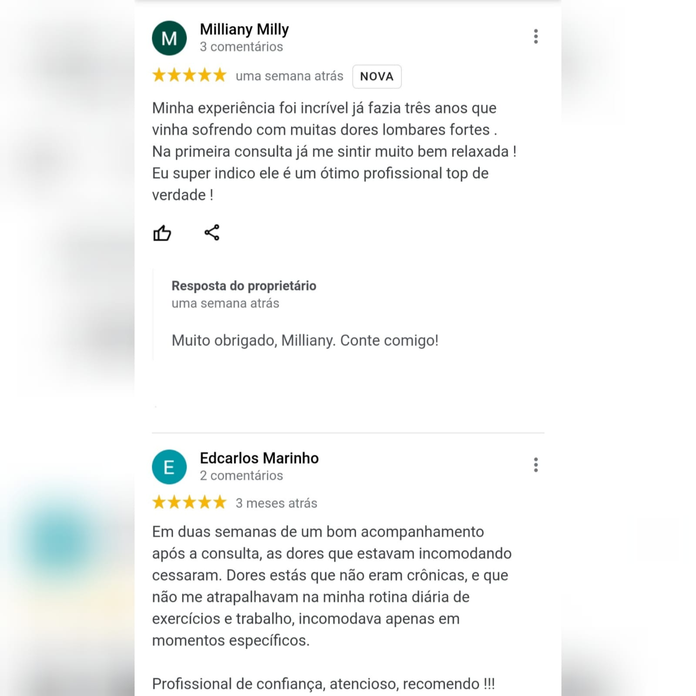
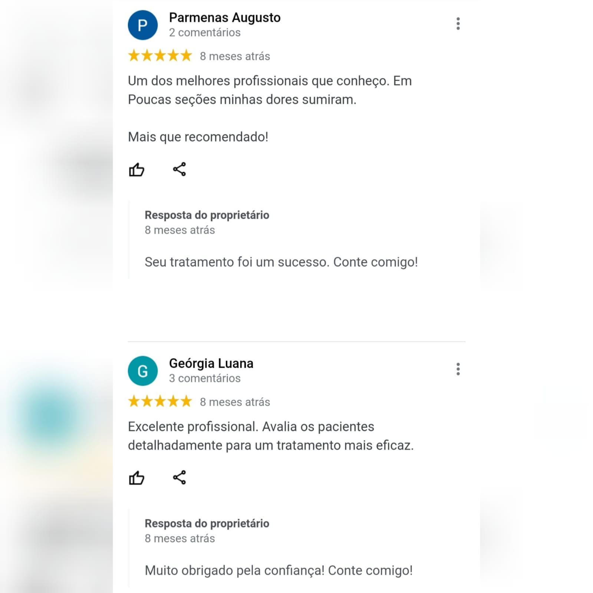
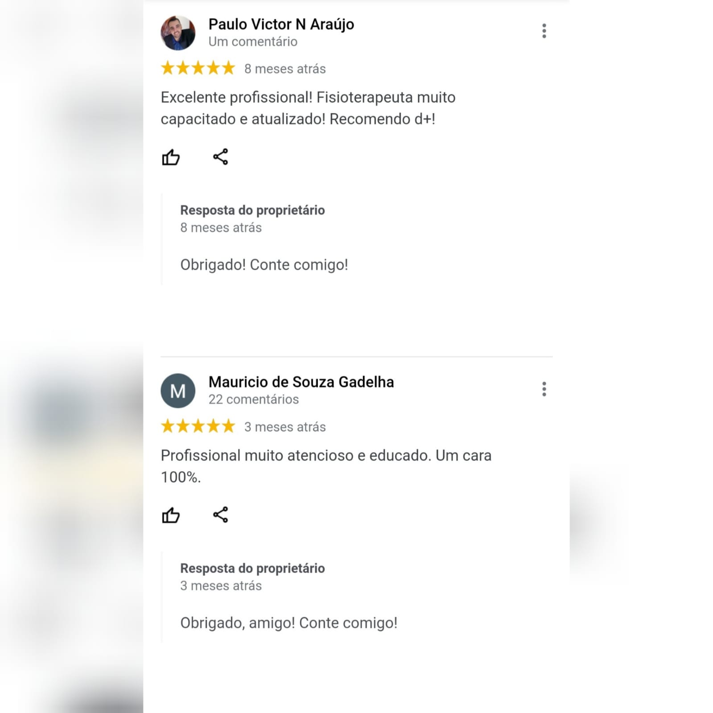
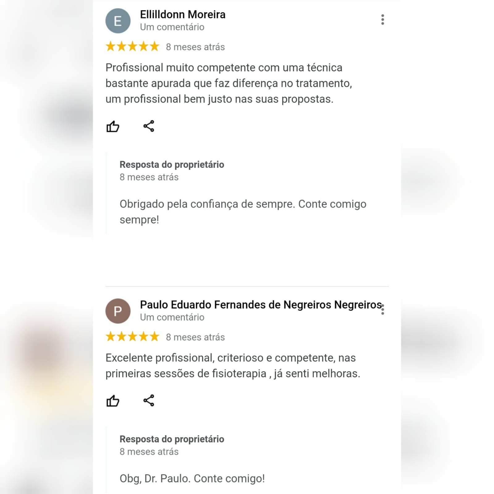
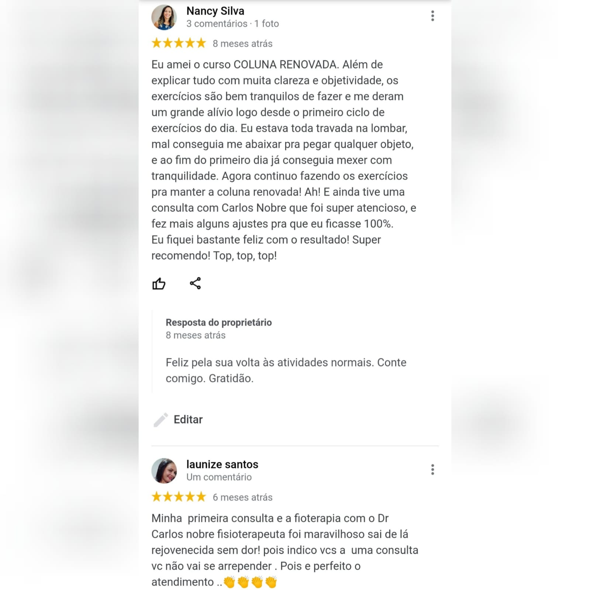
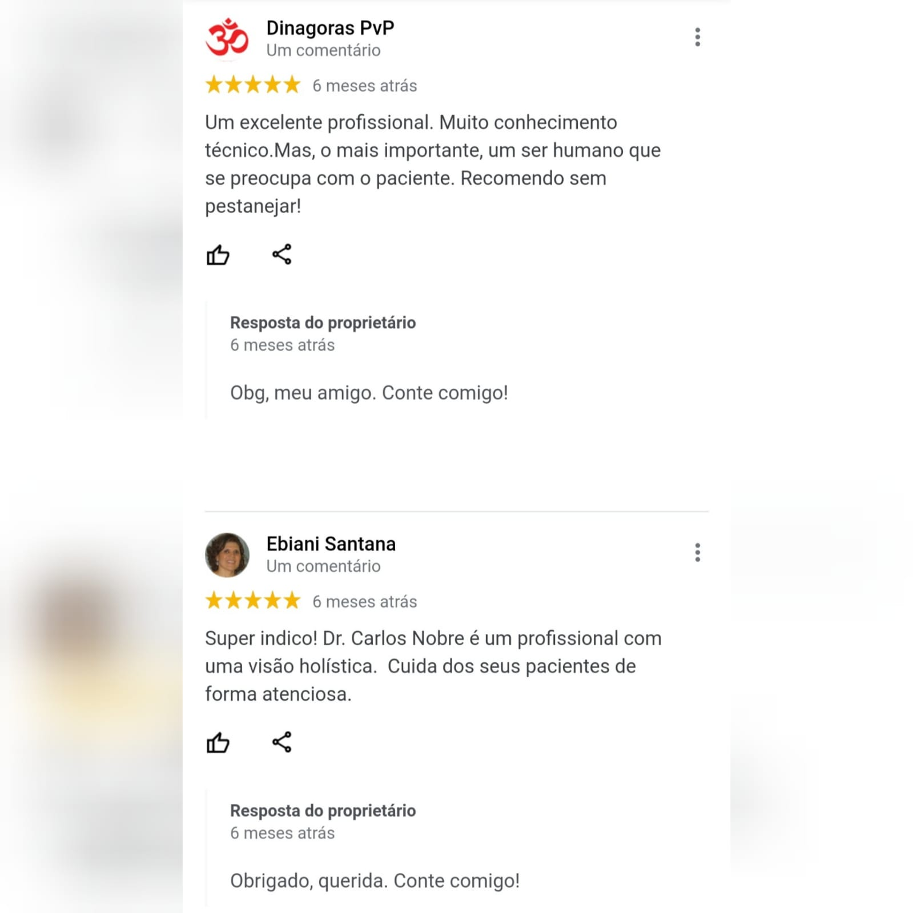
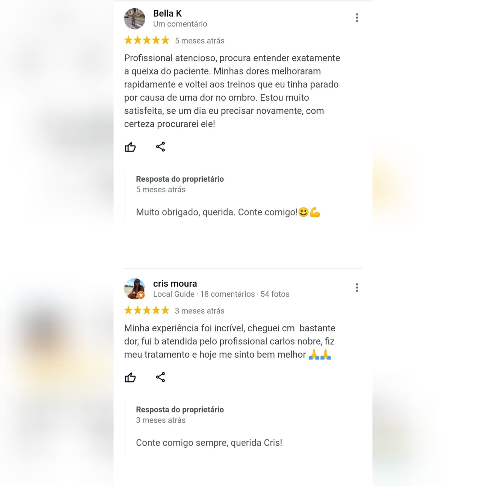
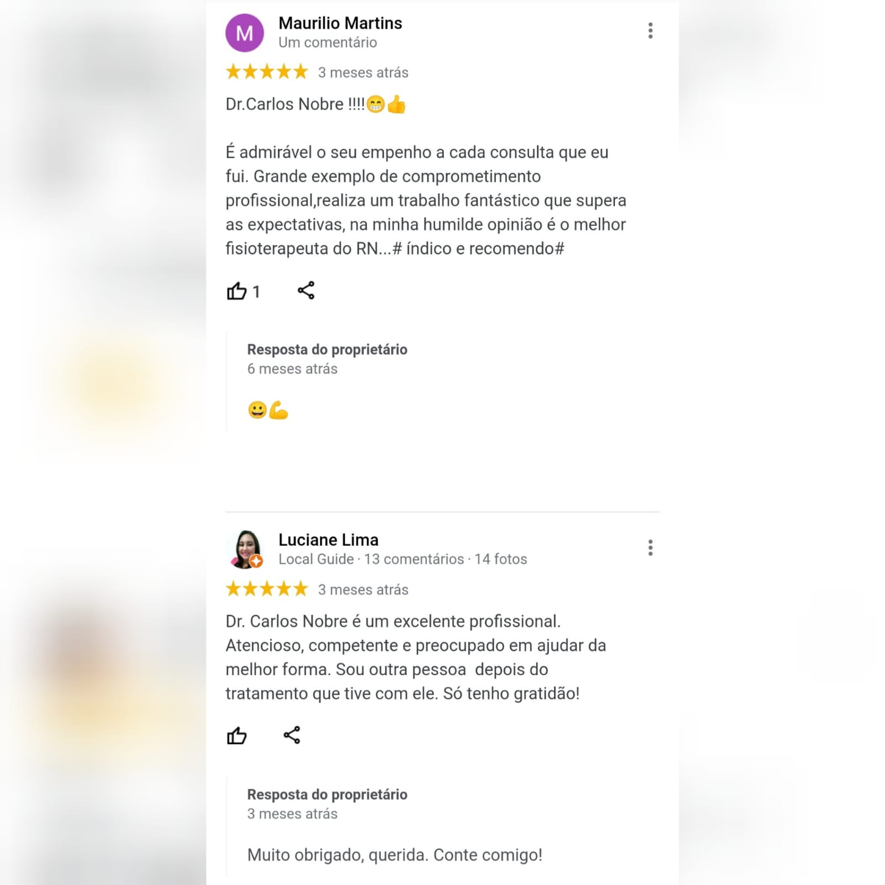

- Para você que não consegue pegar seu filho no braço, dirigir, trabalhar, se exercitar, dobrar a coluna ou realizar pequenas atividades.
- Sente-se impotente, com raiva, triste, decepcionado(a) e até deprimido(a).
- Já cansou de procurar tratamentos sem solução, muitas vezes repetitivos, caros e cansativos.
- Eu posso te ajudar, utilizando um método simples, prático e eficaz.
- Essa simplicidade já me proporcionou centenas de pacientes reabilitados e de volta às atividades diárias normais.
- Volte a ter uma vida normal. Viva sem DOR na coluna!


Carlos Nobre
Fisioterapeuta Osteopata Especialista em Coluna

É dessa maneira que funciona o atendimento de um osteopata.
Com a palavra, o Dr. Carlos Nobre:
O que dizem os pacientes:
- 
- 
- 
- 
- 
- 
- 
- 


Currículo

-
-
80% das pessoas têm ou terão algum episódio de dor lombar alguma vez na vida.
-
-
27 Milhões de adultos no país são acometidos por doenças crônicas na coluna.
-
-
O INSS diz que a dor nas costas é a principal causa de afastamento do trabalho.
-
-
Mulheres são as mais acometidas com as doenças da coluna.
Consultorias:
Para mais informações basta clicar no modelo escolhido.
-
Consultoria Padrão
Este modelo de consultoria é voltado para um paciente de forma única, onde o mesmo é orientado e auxiliado a como cuidar da sua coluna.
-
Consultoria Premium
Uma consultoria única para o paciente, onde o mesmo tem acesso a maiores conteúdos instrutivos e auxiliadores.
-
Consultoria Master
Este modelo de consultoria é voltado para empresas. Através de uma palestra que irá orientar os profissionais a cuidarem da coluna.

Marque uma consulta agora
- A consulta por convênio é rápida e não resolve o problema do paciente.
- Você já deve ter passado por uma consulta assim.
- Por este motivo eu atendo somente consultas particulares!
- A consulta dura o tempo necessário para realizar o diagnóstico preciso e resolver o seu problema.
- Você pode agendar sua consulta pelo meu Whatsapp clicando no botão abaixo.
ÚLTIMOS POSTS:

A maioria dos casos de dores na coluna se dá por tensões em tecidos, como: músculos, fáscias, nervos
e articulações.
Vários são os fatores que contribuem para que essas dores surjam, mas, os mais comuns, são:
1. Sedentarismo;
2. Manter posturas de pé ou sentada por longos períodos;
3. Alta carga de estresse em casa ou no trabalho;
4. Excesso de carregamento de peso;
5. Movimentos repetitivos;
6. Manter a coluna dobrada por longos períodos.
As dores podem se localizar em algum ponto específico, em vários pontos ou até mesmo irradiar.
Podem ser em pontada, choque, formigamento e em queimação.
O paciente pode sentir dor ao repouso e apenas em movimento, e isso vai atrapalhando a sua vida,
seja em casa, no trabalho, na prática regular de exercícios físicos e na vida social.
Sentar, levantar, caminhar, dobrar a coluna para calçar um sapato, vestir uma roupa, pegar o filho
no colo e outras atividades se tornam difíceis.
E na busca da cura, os pacientes cometem um grande ERRO!!
Acham que a medicação vai curar a dor na coluna, e isso NÂO É VERDADE!
A coluna dói devido as tensões, e a medicação vai atuar na dor, na consequência, e não na causa. É
por isso que quando o efeito da medicação passa, a dor tende a voltar até mesmo pior.
E o que fazer para eliminar a dor na coluna? O profissional ideal para tratar sua coluna é o
Fisioterapeuta especialista.
O fisioterapeuta especialista conhece cada vértebra, músculo, ligamento e nervos da coluna.
E por meio de movimentos de desobstrução, realinhamento e fortalecimento, a causa é tratada e a sua
dor é eliminada.
Você ainda trata sua coluna com medicação? Quanto já gastou com remédios sem solução?
Veja os depoimentos abaixo, e os depoimentos no nosso site de quem passou por nosso tratamento e
conseguiu melhorar de vida. Agende sua consulta já.


A nossa coluna é composta de discos que ficam entre as vértebras. Esses discos funcionam como
amortecedores e são essenciais para o bom funcionamento da coluna.
No entanto, devido aos maus hábitos do dia a dia esses discos acabam se desgastando e sofrendo
algumas deformidades.
Na protrusão discal, o disco pode sofrer um abaulamento, deformas, mas não romper;
Na hérnia de disco, o disco se rompe e o seu conteúdo extravasa;
Já na hérnia de disco extrusa é quando boa parte todo o núcleo do disco extravasa e atinge a região
medular e raízes nervosas da coluna.
Localização: o pescoço(cervical) e o lombo (região lombar) são as regiões de maiores prevalência do
aparecimento de hérnias.
Sintomas: na cervical, o paciente vai sentir dificuldade em dobrar, virar ou mexer o pescoço; dor
muito forte no braço ou braços, em forma de choque, pontada ou agulhamento. Sente também
formigamento, dormência e até perda de força e movimento no braço, punho e/ou dedos.
Na lombar, os sintomas são parecidos, mas a dor, formigamento, dormência e perda de força atacam as
pernas. Pacientes relatam que a dor anda da lombar até os dedos dos pés.
Dificuldades: dificuldade em pegar ou segurar um objeto, dormir, se movimentar, se manter de pé ou
sentado, caminhar, dirigir, trabalhar, se exercitar e até dificuldade em fazer sexo.
Tratamento: apesar de todos esses sintomas e limitações, o tratamento da hérnia de disco em 95% dos
casos NÃO É CIRÚRGICO.
O fisioterapeuta especialista em coluna realizará movimentos e posicionamentos para que a coluna
ganhe espaço e reduza a compressão dor nervos. Essas manobras específicas irão trazer alívio da dor,
redução dos sintomas e das limitações. É bem comum no primeiro atendimento o paciente relatar
melhora para dormir, andar e ficar de pé, por exemplo.
Você sabia? Que não há a necessidade imediata de se fazer um raio-x ou ressonância magnética nesses
casos? Sim, existem testes específicos na consulta para se comprovar e diagnosticar a hérnia de
disco.
Você também está sofrendo com esses sintomas? Veja o depoimento abaixo de quem sofria com hérnia de
disco, veja os depoimentos dos nossos pacientes no site. Clique em agendar consulta agora e melhore
a sua vida.


Segundo dados do INSS, a dor na coluna é a principal causa de afastamento do trabalho.
Vários são os fatores para que uma pessoa possa desenvolver uma dor na coluna, ou dor nas costas:
Sedentarismo, passar muito tempo sentado ou de pé, movimentos repetitivos, excesso de carga no
trabalho ou no esporte, obesidade, estresse e fadiga crônica.
A dor pode ser localizada no pescoço, no meio das costas ou na região lombar, sendo o pescoço e a
lombar as regiões mais acometidas.
Pacientes relatam várias sensações dolorosas, como dor em pontada, queimação, dor localizada,
irradiada e referida.
Pode ser bem limitante, como: dificuldade para dobrar a coluna, agachar, vestir uma roupa, pegar
peso, calçar um sapato, fazer uma faxina, caminhar médias e longas distâncias, ficar de pé por muito
tempo, dormir e outras.
Além disso, traz prejuízos sociais: dificuldade para trabalhar, estudar, se exercitar e participar
de encontros familiares e entre amigos.
E se essa dor persistir por mais de 03 meses, pode ser caracterizada como uma dor crônica, e o
paciente deve evitar essa cronificação, pois o tratamento para esses casos requer mais atenção e um
tempo maior.
Tratamento: o tratamento da dor na coluna requer movimentos para desobstruir, realinhar e fortificar
a coluna como antes. Trata-se de movimentos específicos para aliviar a dor e proporcionar a melhoria
da volta as atividades diárias, como retornar a dobrar a coluna e até mesmo dormir um boa noite de
sono.
Você também sofre com dor na coluna? Veja abaixo e em nosso site depoimentos de pacientes que se
trataram em nosso consultório.
Se eles conseguiram, você também pode melhorar de vida. Clique no botão abaixo e agende sua consulta
agora.


Preciso de encaminhamento médico?
A maioria das pessoas não sabem, mas para se consultar com um fisioterapeuta, NÃO É NECESSÁRIO
ENCAMINHAMENTO MÉDICO!
E nos casos de dores musculoesqueléticas, o fisioterapeuta é o profissional mais indicado. São
longos anos de formação, pós-graduações, cursos de capacitação, congressos e outros. Que envolvem o
estudo do corpo humano, as doenças e os tratamentos.
Inclusive, alguns pacientes até caem em descrédito com a fisioterapia, pois já se trataram com
muitas sessões e sem resultados.
Quando recebo os meus pacientes, eles têm um choque de realidade: poxa, eu pensei que você iria
colocar aquele choque e gelo, uma luz vermelha.
Não! Esses procedimentos repetitivos acontecem muitas vezes no atendimento de plano de saúde. Onde o
profissional é sufocado, e precisa atender 05, 08 e até 10 pessoas de uma vez.
Não tem tempo de avaliar, como irá tratar?
Um segundo erro, é NÃO procurar um profissional especialista.
Aqui no nosso consultório, nós só atendemos doenças da coluna, todas forças, cursos e atualizações
envolvem o tema.
E é por isso que em algumas consultas, o tempo pode chegar mais de uma hora.
Trata-se de uma avaliação minuciosa, testes, diagnóstico e tratamento baseado nos melhores estudos e
evidências científicas.
E muitas das vezes, o paciente que não investe num atendimento individualizado e personalizado como
o nosso, pois não quer gastar, acaba gastando mais ainda, com: gasolina(nas muitas sessões que não
resolvem o problema), tempo(tempo é dinheiro), dinheiro com medicação e com coisas que não irão
resolver o problema(cinta, fitas coloridas, ventosas...)
E você, que mesmo melhorar de vida? Clique no botão abaixo e fale conosco.


Fisioterapeuta osteopata especialista em coluna
Dr. Carlos Nobre
Sobre Dr. Carlos Nobre:
Fisioterapeuta especialista em coluna com anos de experiência em ambulatório e atendimento clínico, com mais de mil pacientes reabilitados sem cirurgia.
Endereço:
(R. Cel. Francisco Borges, 111 - Tirol, Natal - RN, 59020-270)